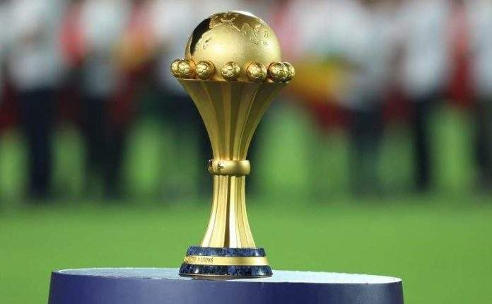
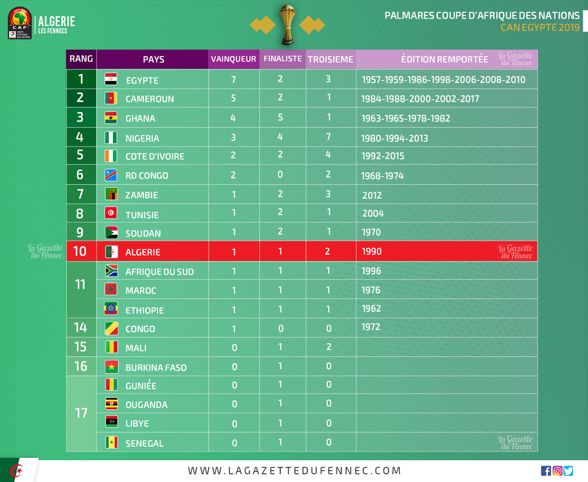

كأس الأمم الأفريقية

كأس أفريقيا للأمم ، كأس الأمم الأفريقية الرسمية رسميًا (الاسم مرتبط بالراعي) ويختصر أحيانًا باسم كأس إفريقيا للأمم ، هو أهم مسابقة كرة قدم أفريقية بين الدول. تم إنشاؤه عام 1957 ، وينظمه الاتحاد الأفريقي لكرة القدم (CAF) كل عامين. اعتبارًا من عام 2013
، تستمر بطولة كأس إفريقيا للأمم (CAN) كل عامين ، ولكن يتم تنظيمها في السنوات الفردية لتجنب التنافس عليها في نفس العام مثل كأس العالم لكرة القدم.
الجزائر تفوز بلقب بطولة إفريقيا لكرة القدم لعام 2019. مصر هي الدولة الأفريقية الأولى التي فازت باللقب القاري ثلاث مرات متتالية (انتصارات في النهائي ضد كوت د) '' Ivoire في عام 2006 ، ومواجهة الكاميرون في 2008 ومواجهة غانا في 2010).
تاريخ
يعود أصل كأس الأمم الأفريقية إلى يونيو 1956 ، عندما تم اقتراح إنشاء الاتحاد الأفريقي لكرة القدم خلال مؤتمر FIFA الثالث في لشبونة من خلال المصري عبد العزيز عبد الله سالم الذي رفض طلبه بسبب قلة عدد الأعضاء الأفارقة (أربعة). ثم قرر الأخير مغادرة المؤتمر قائلًا: "إذا لم تتم معاملتنا جميعًا هنا على قدم المساواة ، فلا شك في وجودنا بينكم. "؛ يرافقه تضامنًا السوداني محمد عبد الحليم ، مما يدفع الفيفا للرد على طلبه. على الفور ، تم وضع مشروع لإنشاء منافسة قارية ، يرغب سالم في ذكر اسمه ، ولكن في مواجهة معارضة الأعضاء الآخرين ، تم اعتماد اسم كأس إفريقيا (على العكس ، الكأس الممنوحة للدببة الفائزة اسم سالم).
زامبيا تضع حداً للهيمنة المصرية خلال نسخة 2012. الفريق المفاجئ من البطولة يفوز باللقب على حساب ساحل العاج المفضل بركلات الترجيح بعد الوقت الإضافي. حامل اللقب الثلاثي ، فشلت مصر في التأهل لبطولة كأس إفريقيا للأمم. لم تتأهل نيجيريا في عام 2012 ، وجدت نيجيريا كأس إفريقيا للأمم في نسخة 2013. سقطت في المجموعة الثالثة ، إلى جانب حامل اللقب الزامبي ، نيجيريا تنهي خلف بوركينا فاسو خلف فارق الأهداف ( القضاء على زامبيا قبل الأوان). يعارض النهائي هذين الفريقين مرة أخرى ، بفوز نيجيريا ، مما يشير إلى عودتها إلى الصدارة بعد الكأس الأخيرة في عام 1994. ومع ذلك ، فإن هذا التحسن لم يدم طويلًا لأن نيجيريا لم تتمكن من التأهل إلى كأس إفريقيا للأمم 2015 في غينيا الاستوائية التي حلت محل المغرب في وقت قصير ، تم تحديدها مبدئيًا كدولة مضيفة ولكن تم استبعادها من قبل CAF بسبب طلبها تأجيل البطولة بسبب وباء الإيبولا. تشهد نسخة 2015 هذه تتويج كوت ديفوار ، في المباراة النهائية التي فازت فيها على غانا في ركلات الترجيح التي لا تنتهي (8 إلى 7). بعد ذلك بعامين ، حان دور الكاميرون لإعادة التواصل مع ماضيها المجيد في المنافسة بفوزها على مصر 2-1 في نهائي كأس إفريقيا للأمم 2017 في الغابون. وهكذا فإن "الأسود التي لا تقهر" تنتقم من "الفراعنة" الذين ضربوهم مرتين في المباراة النهائية (1986 و 2008). بالنسبة لبطولة كان 2019 ، فاز الفريق الجزائري لكرة القدم بعلبته الثانية (بعد 1990) ضد السنغال بنتيجة 1-0.
